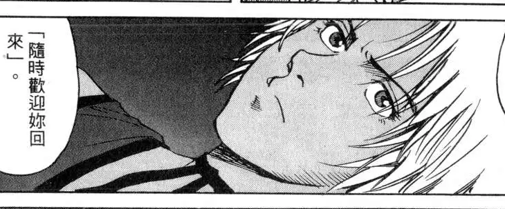
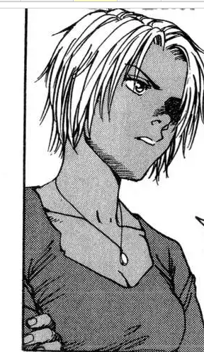
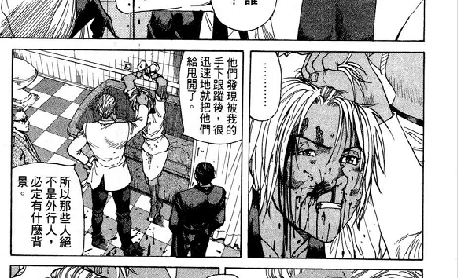
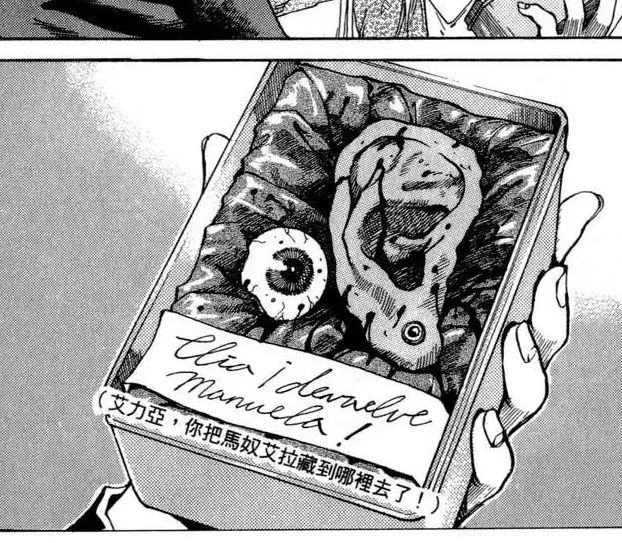
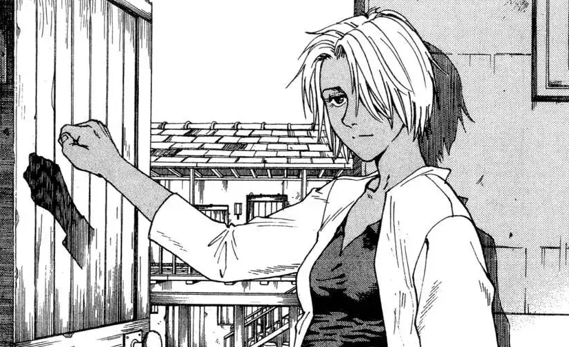
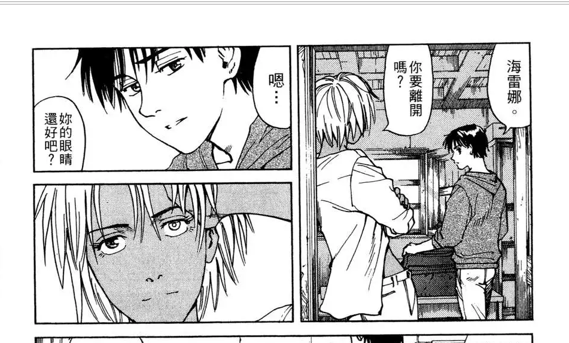

人物介绍⑤：织田由里香
本来这位才应该是正牌女主，但是因为剧情的原因，她变成了配角阿坦的附庸，也就彻底的失去了戏份……
姓名来源是变身漫画《亦兄亦妹》中的一个角色，因为名字很好听，所以就直接给她按上了。
设定是富家女，但因为家长疏于管教导致小时候是不良少女大姐大。初中时和沙耶子机缘巧合的成为了好朋友，后来被感化，不再作恶了，但拳脚功夫没丢，一人打六七个赤手空拳的混混不成问题，比现在的爱尔娜还强上一点。
短发，小麦色皮肤，看上去很干练。比爱尔娜大5个月。
因为已经退居二线，以后也没什么戏份了，所以这里不多介绍她，而是介绍她的人设原形：海雷娜
海雷娜这个人物出自远藤浩辉的末世漫画：《伊甸园EDEN》。这部作品是个人唯二非常欣赏的日本动漫（另一个是吊带袜天使）
这个人物的外貌形象被用在由里香身上，但人物经历却是爱尔娜的模板。概括一下就是饱经风霜还不得好死
玩弄爱尔娜的花样都是搁这里学的
把眼睛和耳朵做为礼物送出去的灵感来源
虽然被割了耳朵挖了眼，但更帅气了有木有！好令人心动的大姐姐
简单提一下这位姐姐的身世，只谈惨的部分：
在充满肮脏和暴力的贫民窟出生，祖母因为想把她的母亲送出贫民窟所以做妓女挣钱，但是没成功，她的母亲重复了她祖母的过去，也没成功。后来她跟着男人出去了，但依旧得靠皮肉生意过活。在给一伙士兵卖肉时被男女主角的团队闯入。所有的士兵和大部分来这里讨生活的同行女人都被杀了，她很幸运的被男主一嗓子救了下来（不是男主对她一见钟情，是同情心）
后来她因为男主的姓氏而认出了男主：男主的父亲是他们那个国家知名的大毒枭。拉皮·条的男人通过从他父亲的组织那里买毒品来控制手下的女孩儿（不过，她很机灵，没给毒品控制）。
后来她在一家大城市的夜店工作，因为照顾一个吸毒的女人，想让对方戒毒，得罪了对方的黑恶势力男朋友，结果被挖眼割耳殴打轮X……
原本和男主大概是恋人关系，但后来大概是不想拖累男主，和别的男人结婚了。
然后被人枪杀了……
嗯，巨几把的突然。我曾经以为她是本文的女主角，结果她死的时候，全文才到1/3.
。
不过那本漫画并不是单一男女主路线，虽然有男主角但是是群像剧，有那么十几个主要人物。我一直嫌弃日漫幼稚的很还装黑深残，以自己的文要尽量现实流但觉不搞故作高深，就是在向这本漫画学习的。